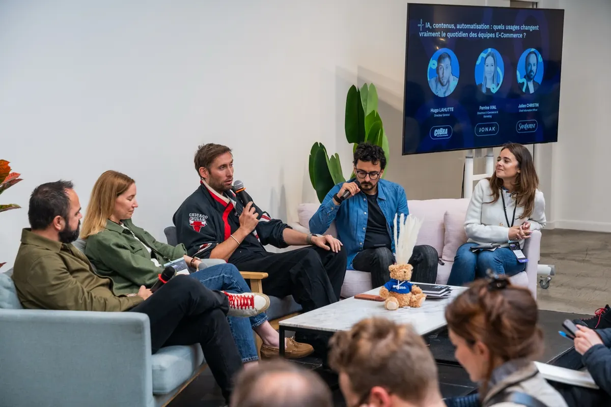

Build in public · Méthode & journal de bord
Je construis
avec Claude.
De plus en plus de gens me demandent comment je travaille avec l'IA. Plutôt que de répéter, je documente tout ici : ma méthode, mes fichiers de config, mes projets, et le détail de ce que je construis — session après session.
Le plus demandé
Comment j'utilise Claude
Le cœur de ma méthode tient en quelques fichiers .md que je colle dans les « Project Instructions » de Claude. Un CLAUDE.md principal qui définit mon ton, mes règles et mon contexte, des fichiers d'extension chargés à la demande (stratégie, dev…), et un fichier dédié à l'ADN de chaque marque.
Le principe directeur : le Compound Engineering. Chaque fois que Claude se trompe sur mon style, j'ajoute une règle. Le système s'améliore avec l'usage — et tout le travail futur en profite.
Voir la méthode pas à pas
Comprendre pour décider
Guides
En parallèle du journal, je publie des guides clairs sur l'IA et les outils que j'utilise : c'est quoi, à quoi ça sert, ce que ça change. Pensés pour des marchands et des dirigeants pressés, mais lisibles à tous les niveaux — trois profondeurs de lecture dans chaque page.
Le premier pose les bases : l'IA générative et les « LLM », sans jargon, avec les grands acteurs et surtout ce qu'ils ne savent pas faire.
C'est quoi l'IA et un LLM ? →Ce que je construis
Les projets
Tout est cohérent : une même méthode (Claude + fichiers de contexte) appliquée à un même terrain — le commerce de l'audio / vidéo haut de gamme et les outils qui le font tourner. Le dev (Cobra) alimente les boutiques, les boutiques nourrissent la communauté (HiFi Lovers), et le perso sert de laboratoire.
Échangeons
Ça te parle ?
Je documente tout ça en public, et j'adore en discuter. Si tu construis avec Claude, si un de ces projets t'intrigue, ou si tu veux juste comparer nos approches — écris-moi, on en parle.